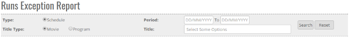
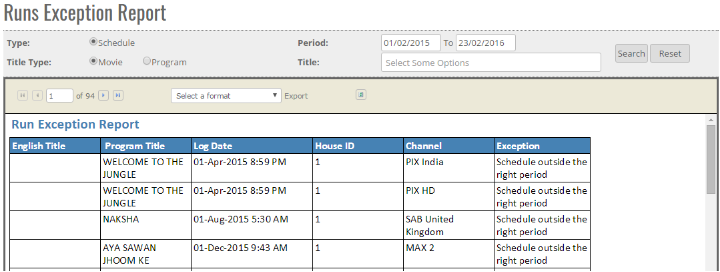


	<section>
		<article>
			<h2>Run Exception Report<span></span></h2>
			<div>
				<p></p>

				<p>This reports is accessible to those user who has right for this module.</p>

				<p>This report help to show the Run Exception Report <b>(If channel wise/ schedule, get Exceed where its Run allocated)</b></p>

				<p>For Eg : BV Programme ID not found , Schedule Outside Right Period ,Outside Prime Time , Outside Off-Prime Time, schedule outside the periods, Exceed year wise allocated runs etc.</p>

				<div class="triangle-border top">				
					
				</div>

				<p>To access this report click on "<b>Reports</b>" and then click on "<b>Run Exception Report</b>"</p>

				<p>User can see many option  Schedule Type, Title Type, Periods, Title, Search Button , Reset button.</p>

				<p><b>Schedule Type</b> - Exceptions for Schedule will get populated.</p>

				<p><b>Title Type</b> - Reports will come according to the Title type For Eg : Movie/Program</p>

				<p><b>Periods</b> - Report will come according to Run exception date , it will show the Start and end date of Exception of deal</p>

				<p><b>Title</b> : User can select single or Multiple title</p>

				<p><b>Search Button</b> : After applying all the criterias, data is generated when user clicks on Search button.</p>

				<p><b>Reset</b> : This will reset all the selected user criteria.</p>

				<div class="triangle-border top">				
					
				</div>

				<p><b>English Title</b> - Where english Title record will come. If there is nothing, it wil show blank.</p>

				<p><b>Program Title</b> - Title name will be shown in this column.</p>

				<p><b>Log Date</b> - Date on which the exception is logged.</p>

				<p><b>House Id</b> - Relevant house id of the schedule.</p>

				<p><b>Channel</b> - Channel for which the exception has occured will be shown in this column.</p>

				<p><b>Exception</b> - It will show the schedule exception error type like -BV Programme ID not found , Schedule Outside Right Period ,Outside Prime Time etc.)</p>
				
			</div>
		</article>
	</section>